Introduction to Machine Learning
Chadi Helwe, PhD
CSC 464: Deep Learning for Natural
Language Processing
What is Machine Learning?
Intro. to Machine Learning
Definition of Machine Learning
Machine learning is the field of study that gives computers the ability to learn without being explicitly programmed.
- Arthur Samuel, 1959
Intro. to Machine Learning
Why Use Machine Learning? (1/2)
Traditional Method:
1- To identify spam, look for common words and phrases in subject lines, like "4U," "credit card," "free," and "amazing." Also, pay attention to patterns in the sender's name and the email's content.
2- You would write a detection algorithm for each of the patterns that you noticed, and your program would flag emails as spam if a number of these patterns were detected.
3- You would test your program and repeat steps 1 and 2 until it was good enough to launch.
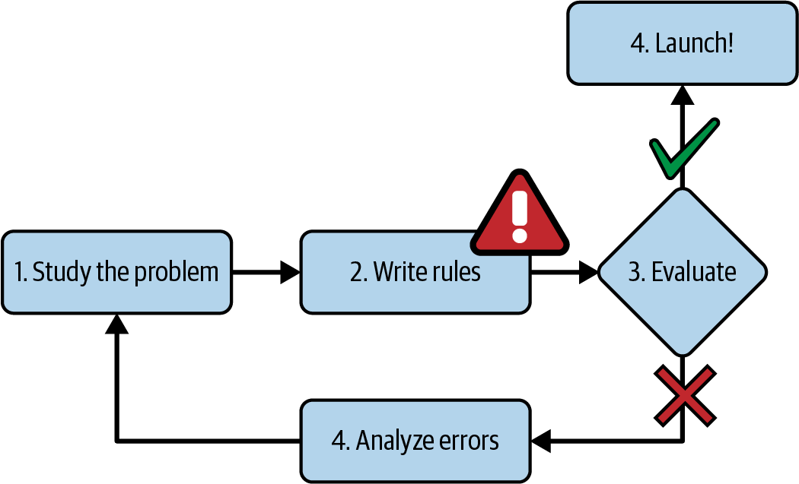
Intro. to Machine Learning
Why Use Machine Learning? (2/2)
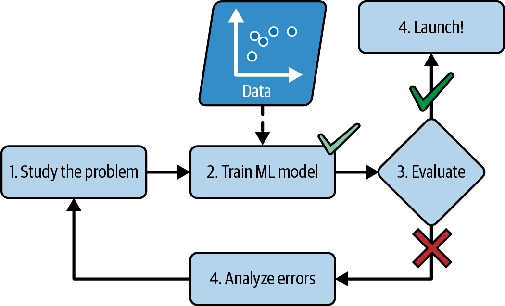
The Machine Learning Method
Intro. to Machine Learning
Applications of Machine Learning
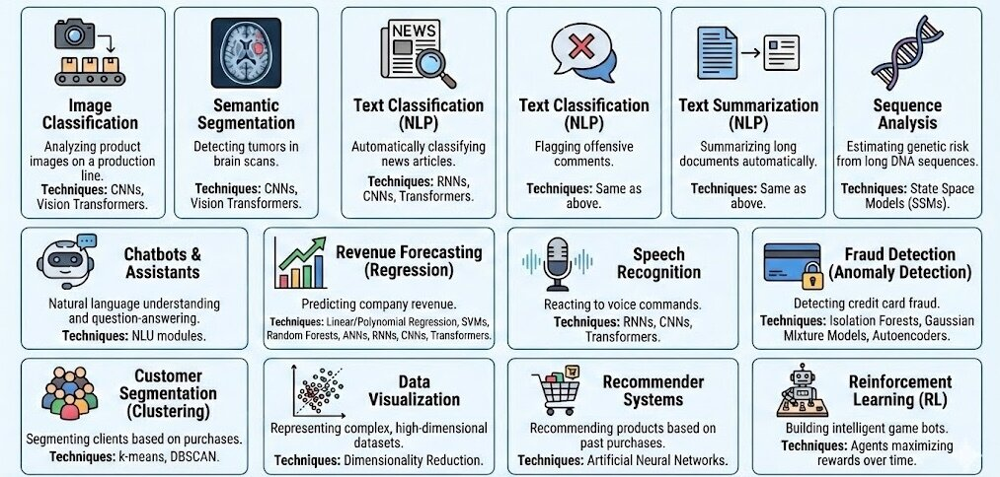
Training Supervision
Intro. to Machine Learning
Supervised Learning
In supervised learning, the training set you feed to the algorithm includes the desired solutions, called labels.
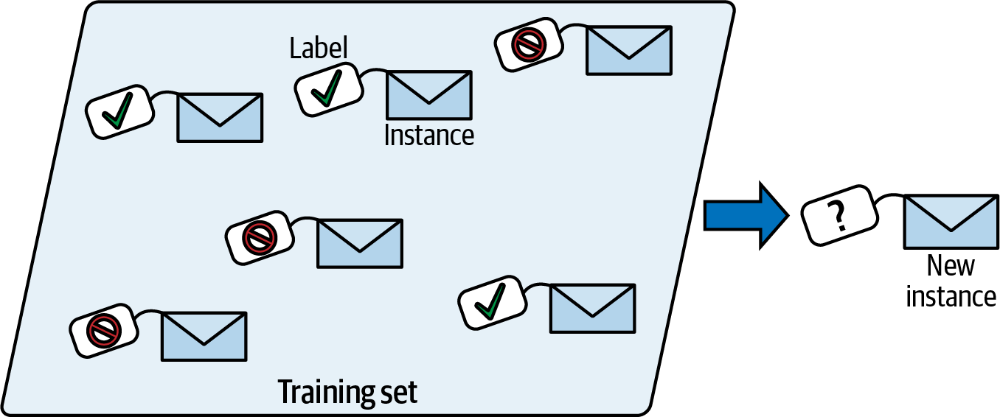
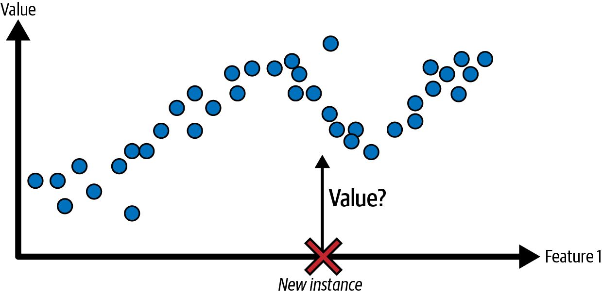
Classification
Regression
Unsupervised Learning
In unsupervised learning, as you might guess, the training data is unlabeled. The system tries to learn without a teacher.
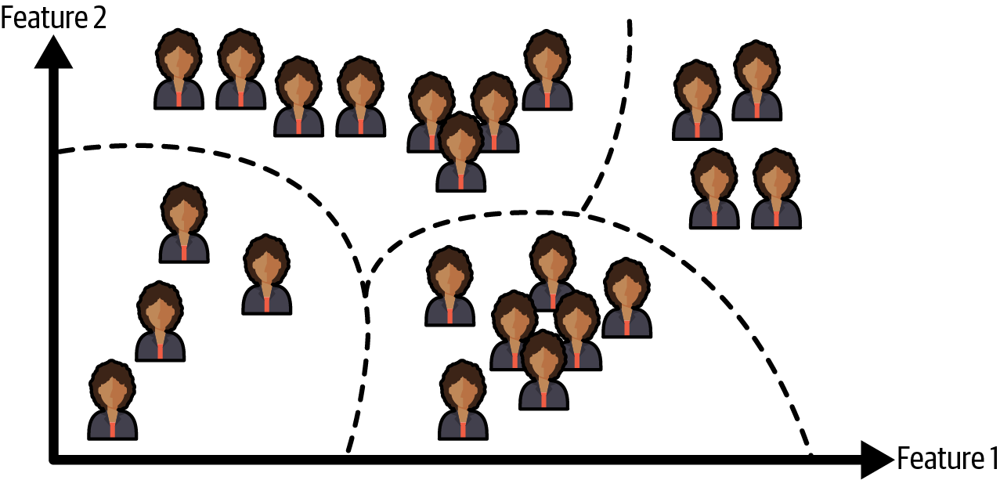
Clustering
Anomaly Detection
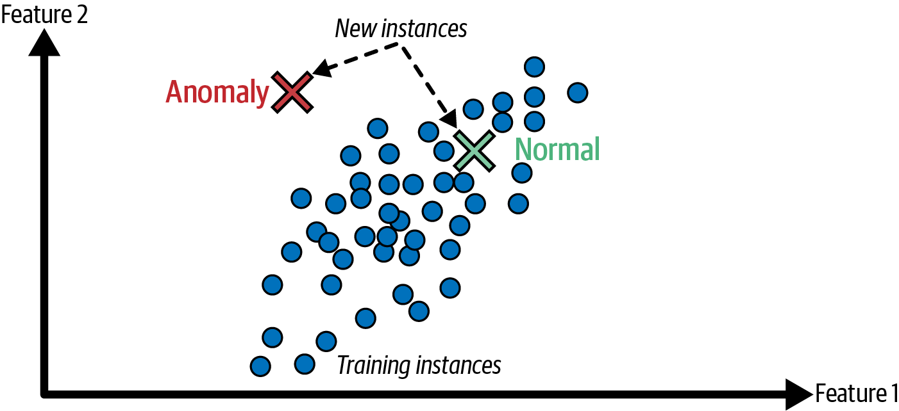
Intro. to Machine Learning
Semi-supervised Learning
Labeling data is time-consuming and costly, leading to many unlabeled instances and few labeled ones. Some algorithms can handle partially labeled data, a process known as semi-supervised learning.
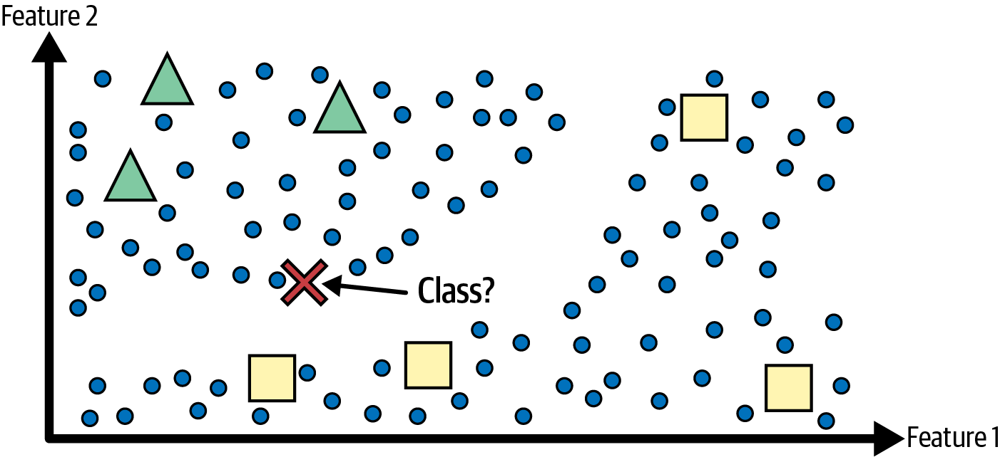
Intro. to Machine Learning
Self-supervised Learning
Another approach to machine learning involves actually generating a fully labeled dataset from a fully unlabeled one. Again, once the whole dataset is labeled, any supervised learning algorithm can be used. This approach is called self-supervised learning
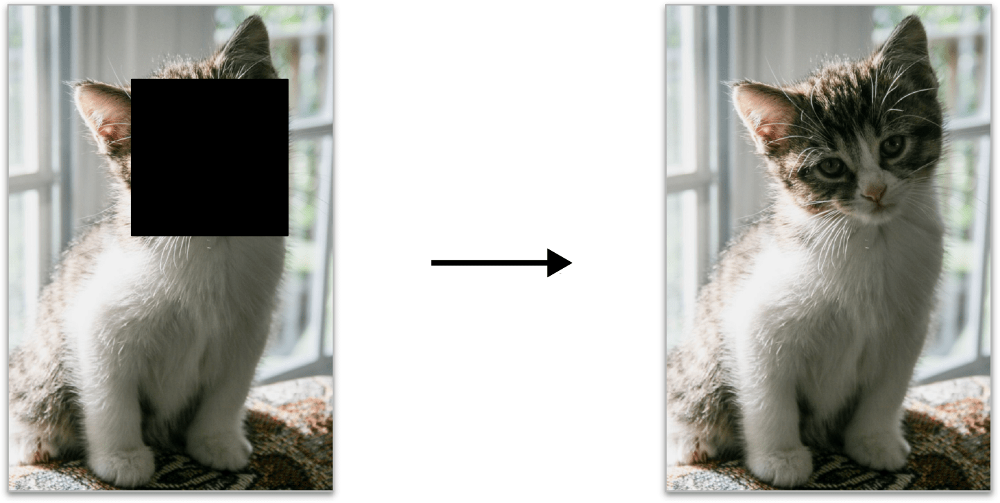
Intro. to Machine Learning
Reinforcement Learning
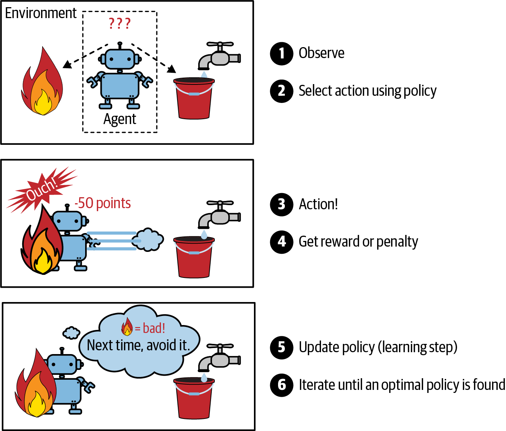
Reinforcement Learning is a type of machine learning where an agent learns to make decisions by performing actions in an environment and receiving feedback in the form of rewards or penalties
Intro. to Machine Learning
Logistic Regression
Text Classification: The Core Task of NLP (1/4)
The goal is to take a single input (an observation ) and assign it to one of a set of discrete classes .
Formally: We want to learn a mapping function from input to output class
Intro. to Machine Learning
Common NLP Classification Tasks:
-
Sentiment Analysis: Is this review positive or negative?
-
Spam Detection: Is this email junk?
-
Language Identification: Is this text in English, Arabic, or French?
-
Authorship Attribution: Who wrote this text?
Text Classification: The Core Task of NLP (2/4)
Intro. to Machine Learning
Language Modeling is Classification:
-
Crucial Insight: Predicting the next word in a sequence is simply classifying the context-so-far into one of |V| classes (where |V| is the vocabulary size).
-
Every time an LLM generates a token, it is performing a massive classification step.
The Classification Pipeline
-
Input (x): The raw text (e.g., a movie review).
-
Feature Representation: Converting text into vectors (e.g., word counts).
-
Classification Function: Computing the probability P(y|x) (e.g., via Sigmoid/Softmax).
-
Objective: Minimizing loss (e.g., Cross-Entropy) to train the model.
Text Classification: The Core Task of NLP (3/4)
Intro. to Machine Learning
The input Observation (x):
-
We represent a single observation (e.g., a document) as a feature vector:
-
These features often represent specific properties, such as the counts of specific words in the text
The Binary Output (y):
-
The classifier output y is a discrete binary label:
-
y=1: The observation is a member of the class (e.g., Positive).
- y=0: The observation is not a member of the class (e.g., Negative).
-
Text Classification: The Core Task of NLP (4/4)
Intro. to Machine Learning
Estimating Probability:
-
We do not just want a label, we want to know the probability that this specific observation x belongs to the target class:
Example (Sentiment Analysis):
-
P(y=0|x) represents the probability that the document has negative sentiment.
-
P(y=1|x) represents the probability that the document has positive sentiment.
Logistic Regression (1/4)
Intro. to Machine Learning
A Probabilistic Classifier:
-
It estimates the conditional probability \( P(y=1|x) \), representing the likelihood that a specific input \(x\) belongs to the target class.
-
It provides a distribution over classes (e.g., "70% chance Positive, 30% chance Negative"), which is critical for assessing model confidence and making downstream decisions.
The Foundation of Neural Networks:
-
It serves as the fundamental building block of deep learning: a neural network can be viewed as a series of logistic regression classifiers stacked on top of each other.
Logistic Regression (2/4)
Intro. to Machine Learning
Logistic regression works by learning two sets of parameters from the training data: a vector of weights (\(w\)) and a bias term (\(b\)).
The Weights (\(w_i\)):
-
Each weight is a real number associated with a specific input feature \(x_i\).
-
The weight indicates the importance of that feature to the classification decision.
The Bias (\(b\)):
-
Also called the intercept.
-
This is a real number added to the sum of the weighted inputs.
-
It acts as a permanent offset, shifting the decision boundary to fit the data better.
Logistic Regression (3/4)
Intro. to Machine Learning
The Decision Process
-
Once the weights are learned during training, we make decisions on new test instances by combining the features linearly.
Step 1: The Weighted Sum
-
The classifier multiplies each input feature \(x_i\) by its corresponding learned weight \(w_i\).
-
It sums up all these weighted features.
Step 2: Adding the Bias
-
Finally, the bias term \(b\) (intercept) is added to the sum.
Logistic Regression (4/4)
Intro. to Machine Learning
The Result (z)
-
This produces a single number \(z\), the logit, which represents the weighted sum of the evidence for the class.
The Sigmoid Function
Intro. to Machine Learning
The Sigmoid (Logistic) Function
-
To convert the raw score z into a valid probability, we pass it through the sigmoid function
-
Also known as the logistic function.
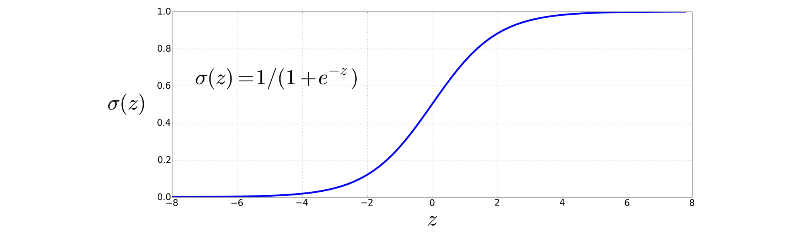
Range (0,1)
Squashing
Differentiable
The Sigmoid Function
Intro. to Machine Learning
If we apply the sigmoid to the sum of the weighted features, we get a number between 0 and 1. To make it a probability, we just need to make sure that the two cases, \(P(y=1)\) and \(P(y=0)\), sum to 1. We can do this as follows:
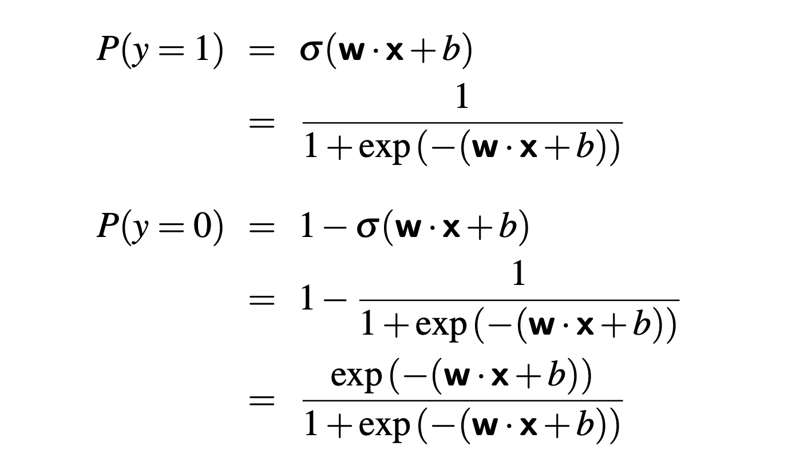
Anatomy of a Logistic Regression
Intro. to Machine Learning
Activation
Function
Weight
Input feature
Sigmoid
It is also considered as a neuron in a Neural Network
Classification with Logistic Regression
Intro. to Machine Learning
The sigmoid function gives us a way to take an instance x and compute the probability P(y = 1|x).
How do we make a decision about which class to apply to a test instance x?
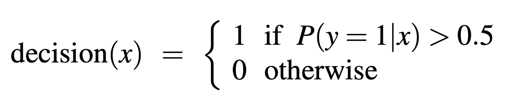
Decision boundary
Case Study: Sentiment Classification (1/2)
Intro. to Machine Learning
The Task
-
Goal: Classify a movie review document x as Positive (+) or Negative (-).
-
Input Text: "It's hokey... So why was it so enjoyable? ... the cast is great. Another nice touch..." .
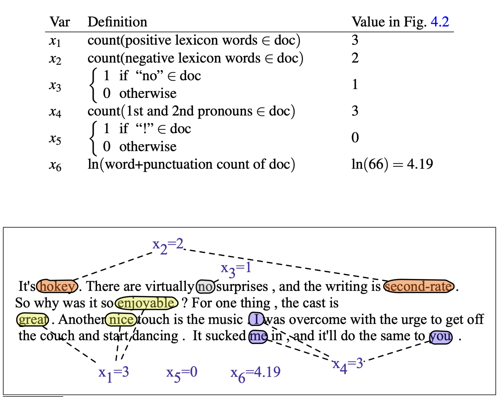
We convert the raw text into a feature vector of 6 distinct features
x = [3, 2, 1, 3, 0, 4.19]
Case Study: Sentiment Classification (2/2)
Intro. to Machine Learning
The Learned Weights (w)
-
Assume we have already trained the model and learned these weights:
Given these 6 features and the input review x, P(+|x) and P(−|x) can be computed:
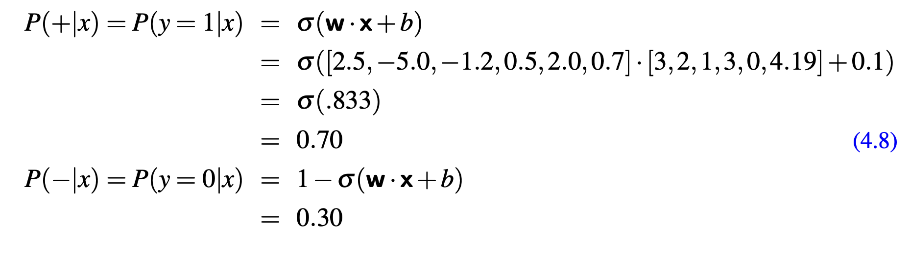
Processing Many Examples at Once (1/2)
Intro. to Machine Learning
We have shown the equations for logistic regression for a single example. But in practice, we will of course want to process an entire test set with many examples.
The Problem with Loops
-
Ideally, we want to classify an entire test set of m examples at once.
-
Writing a
for-loopto compute predictions one by one (y^1, y^2, ...) is computationally inefficient.
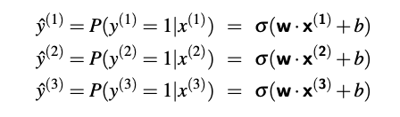
Processing Many Examples at Once (2/2)
Intro. to Machine Learning
The Solution: Matrix Multiplication
-
We pack all m input vectors into a single input matrix X of shape [m x f] (where f is the number of features).
-
Each row represents one test document's feature vector
The Vectorized Equation
-
We can compute the probabilities for all examples in a single step using matrix arithmetic:
Learning in Logistic Regression (1/2)
Intro. to Machine Learning
The Goal of Training
-
We start with a labeled training set in which we know the correct binary label y (0 or 1) for each input observation x.
-
Objective: Learn the parameters (weights w and bias b) that make the model's predicted probability ŷ match the true labels y.
-
If the true label is 1, we want the prediction ŷ to be high (close to 1).
-
If the true label is 0, we want the prediction ŷ to be low (close to 0).
-
Learning in Logistic Regression (2/2)
Intro. to Machine Learning
The Two Requirements for Learning
-
To learn these optimal parameters, we need two distinct components:
-
A Loss Function: A metric to measure the "distance" (error) between the system's prediction ŷ and the true gold label y.
-
e.g., Cross-Entropy Loss.
-
-
An Optimization Algorithm: A method to iteratively update the weights to minimize this loss function.
-
e.g., Stochastic Gradient Descent.
-
-
The Cross-Entropy Loss
The Cross-Entropy Loss Function
Intro. to Machine Learning
Defining "Loss"
-
We need a metric to measure how close our classifier's output ŷ (probability) is to the true label y (0 or 1).
-
We call this the Loss Function or Cost Function.
-
Goal: We want to find weights that minimize this loss.
Deriving the Cross-entropy Loss Function (1/2)
Intro. to Machine Learning
Step 1: The Probability of the Correct Label
-
Since our target \(y\) is binary (0 or 1), the probability distribution is Bernoulli.
-
We can combine the probabilities for both cases (\(y=1\) and \(y=0\)) into a single equation :
-
Check: If \(y=1\), the term \((1-\hat{y})^0\) becomes 1, leaving just \(\hat{y}\). If \(y=0\), the term \(\hat{y}^0\) becomes 1, leaving \(1-\hat{y}\).
Step 2: Log Likelihood
- We take the log of both sides. This simplifies the math (turning exponents into multipliers) and is valid because maximizing log-probability is equivalent to maximizing probability .
Deriving the Cross-entropy Loss Function (2/2)
Intro. to Machine Learning
Step 3: From Likelihood to Loss
-
We want to minimize error (loss), not maximize likelihood. Therefore, we flip the sign to create the loss function :
Step 4: The Final Equation
-
Substituting the sigmoid output gives us the full objective function we need to minimize :
Example: Cross-entropy Loss Function (1/2)
Intro. to Machine Learning
If we plug:
We get:
Example: Cross-entropy Loss Function (2/2)
Intro. to Machine Learning
If we plug:
We get:
Gradient Descent
The Goal of Training
Intro. to Machine Learning
Objective: We need to find the optimal weights (\(w\)) and bias (\(b\)) that minimize our loss function.
The Loss Function: We use the cross-entropy loss
\(L_{CE}\), parameterized by \(\theta\) (where \(\theta =\{w,b\}\)).
The Minimization Problem:
$$\hat{\theta} = \underset{\theta}{\mathrm{argmin}} \frac{1}{m} \sum_{i=1}^{m} L_{CE}(f(x^{(i)}; \theta), y^{(i)})$$
We want the set of weights that results in the lowest average loss across all training examples.
Gradient Descent
Intro. to Machine Learning
Gradient descent is a method that finds a minimum of a function by figuring out in which direction (in the space of the parameters \(\theta\)) the function’s slope is rising the most steeply, and moving in the opposite direction.
Intuition:
Imagine you are hiking in a canyon and want to reach the river at the bottom as quickly as possible.
-
You look around to find the direction where the ground slopes down the steepest.
-
You take a step in that direction
Convexity
Intro. to Machine Learning
The loss function for logistic regression is convex, meaning it looks like a bowl with only one minimum.
Advantage: Gradient descent is guaranteed to find the global minimum starting from any point (no local minima to get stuck in).
Contrast: Neural network loss functions are non-convex and can have many local minima.
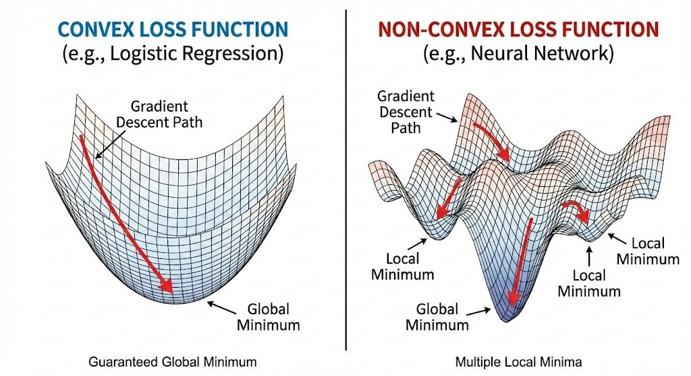
The Gradient
Intro. to Machine Learning
Definition: The gradient is a vector that points in the direction of the greatest increase in the function (steepest ascent).
Descent: Since we want to minimize loss, we must move in the opposite direction of the gradient.
Visualizing the Gradient:
-
For a single weight \(w\), the gradient is just the slope of the line.
-
If the slope is negative (going down to the right), we move right (positive direction).
-
For multiple weights (e.g., \(w\) and \(b\)), the gradient is a vector of partial derivatives.
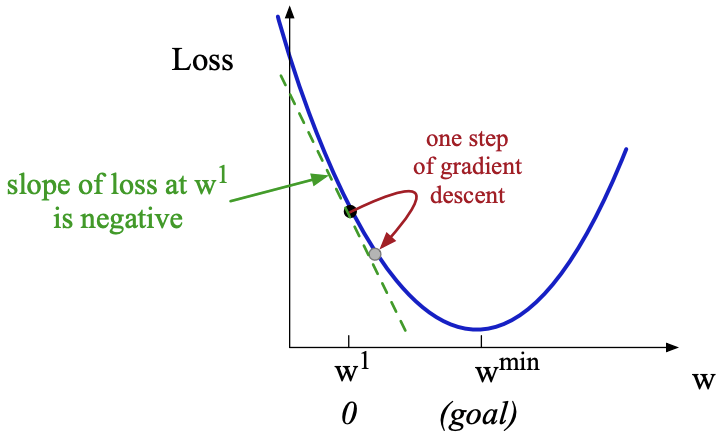
The Update Rule and Learning Rate
Intro. to Machine Learning
The Update Equation:
$$\theta^{t+1} = \theta^{t} - \eta \nabla L(f(x;\theta), y)$$
-
\(\theta^{t}\): Current weights.
-
\(\nabla L\): The gradient (direction of steepest slope).
-
\(\eta\) (eta): The learning rate.
The Learning Rate \(\eta\): A hyperparameter that determines the step size.
-
Too High: You may overshoot the minimum.
-
Too Low: Convergence will be very slow.
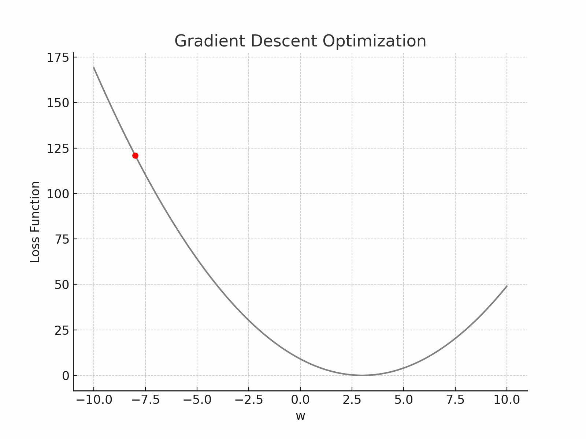
Visualization of Different Learning Rates
Intro. to Machine Learning
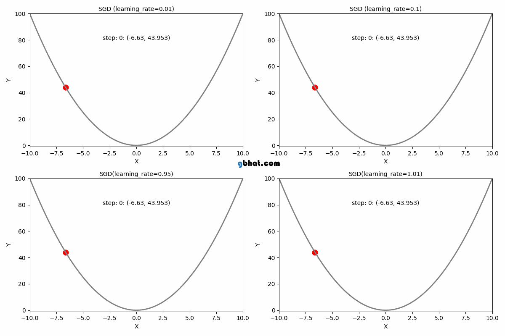
The Gradient for Logistic Regression
Intro. to Machine Learning
We need the derivative of the Cross-Entropy loss with respect to specific weights.
The Derivative:
$$\frac{\partial L_{CE}(\hat{y}, y)}{\partial w_j} = (\hat{y} - y)x_j$$
This is the difference between our prediction \(\hat{y}\) and the true label \(y\), multiplied by the input feature value \(x_j\).
If our prediction is perfect (\(\hat{y} \approx y\)), the gradient is near 0 (don't move).
If the prediction is far off, the gradient is large, forcing a larger update
Stochastic Gradient Descent (SGD)
Intro. to Machine Learning
SGD minimizes loss by processing one single training example at a time.
Why "Stochastic"?: It chooses a single random example, making the path to the minimum "noisy" or choppy compared to processing all data at once.
The Algorithm:
-
Initialize \(\theta\) (usually to 0 for logistic regression).
-
Loop through training examples randomly.
-
Compute the gradient for the current example pair \((x,y)\).
-
Update \(\theta\) immediately.
Working Through a Running Example (1/3)
Intro. to Machine Learning
Consider a single observation \(x\), where the true value is \(y = 1\) (indicating a positive review). The feature vector is represented as \(x = [x_1, x_2]\), which consists of these two features:
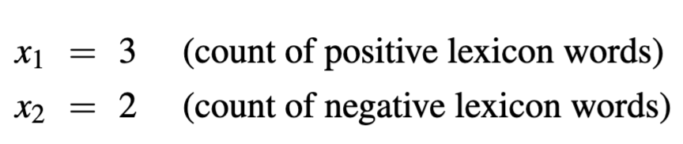
Let's assume the initial weights and bias in \(\theta^0\) are all set to \(0\), and the initial learning rate \(\eta\) is \(0.1\):
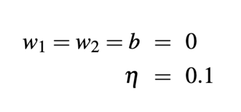
Working Through a Running Example (2/3)
Intro. to Machine Learning
The single update step requires that we compute the gradient, multiplied by the learning rate:
In our mini example there are three parameters, so the gradient vector has 3 dimensions, for \(w_1\), \(w_2\), and \(b\). We can compute the first gradient as follows:
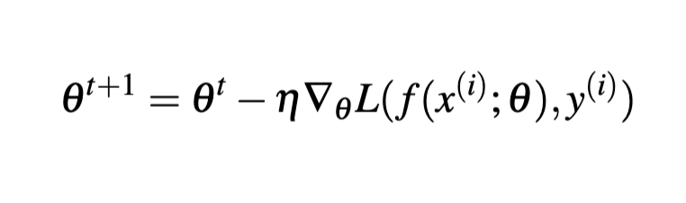
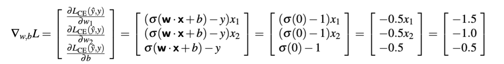
Working Through a Running Example (3/3)
Intro. to Machine Learning
Now that we have a gradient, we compute the new parameter vector \(\theta_1\) by moving \(\theta_0\) in the opposite direction from the gradient:
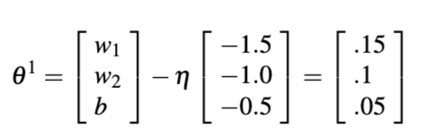
Batch vs. Mini-Batch
Intro. to Machine Learning
Batch Training: Computes the gradient over the entire dataset before making one update.
Pro: Perfect estimate of direction.
Con: Very slow computation for a single step.
Mini-Batch Training: Computes gradient over a group of \(m\) examples (e.g., 512 or 1024).
Advantages:
- Vectorized computation (parallelism) makes it efficient.
- Less choppy than pure SGD, faster than Batch.
Beyond Binary Classification
Intro. to Machine Learning
Binary logistic regression is limited to two classes (0 or 1). However, many NLP tasks involve choosing from a set of \(K\) classes \((K \gt 2)\).
-
Examples: Sentiment Analysis (Positive, Negative, Neutral), Part-of-Speech Tagging (Noun, Verb, Adj...), or Next Word Prediction (\(V\) classes) .
The Output Representation:
Instead of a single scalar, the true label \(y\) is a one-hot vector of length \(K\) (e.g., \([0,0,1,0]\) if class 3 is correct) .
-
The classifier outputs a vector \(\hat{y}\) where each element \(\hat{y}_k\) represents the probability \(P(y_k=1|x)\).
The Goal: We want to assign an observation \(x\) to exactly one class \(k\) from the set \(K\).
The Softmax Function
Intro. to Machine Learning
To handle \(K\) classes, we replace the Sigmoid function with the Softmax function, which converts \(K\) scores (logits) into a probability distribution that sums to 1.
$$softmax(z_i) = \frac{\exp(z_i)}{\sum_{j=1}^{K} \exp(z_j)}$$
The Model Probability: The probability of input \(x\) belonging to class \(k\) is calculated by taking the dot product for that specific class \((w_k \cdot x)\), exponentiating it, and normalizing by the sum of all classes.
$$P(y_k=1|x) = \frac{\exp(w_k \cdot x + b_k)}{\sum_{j=1}^{K} \exp(w_j \cdot x + b_j)}$$
Intro. to Machine Learning
Parameters vs. Hyperparameters
A hyperparameter is a characteristic of a learning algorithm. Its value affects how the algorithm functions. The algorithm does not learn hyperparameters from the data itself.
Examples of hyperparameters include the learning rate and the number of epochs.
Parameters are variables that define the model learned by the learning algorithms. Parameters are directly modified by the learning algorithm based on the training data.
The parameters are the \(w\) and \(b\).
Binary vs. Multinomial Logistic Regression
Intro. to Machine Learning
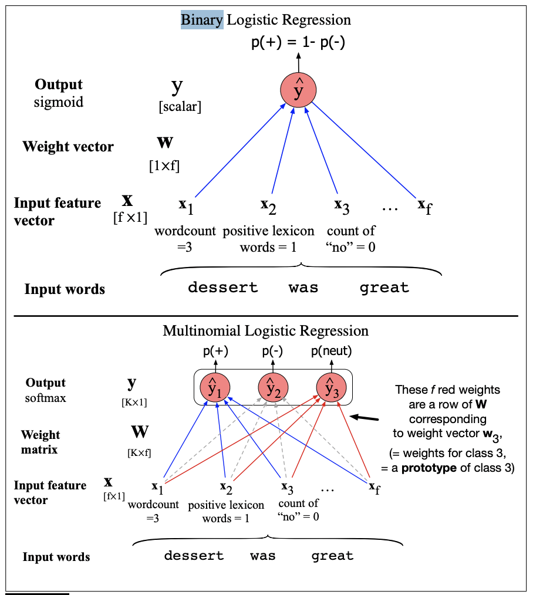
Demo
Intro. to Machine Learning
Setup and Data
import pandas as pd
from sklearn.feature_extraction.text import CountVectorizer
from sklearn.linear_model import LogisticRegression
# 1. The Training Data (Small corpus of reviews)
# We have 4 documents: 2 Positive (1), 2 Negative (0)
train_sentences = [
"I love this movie it is awesome", # Positive
"best movie ever truly great", # Positive
"I hate this movie it is awful", # Negative
"terrible movie completely bad" # Negative
]
y_train = [1, 1, 0, 0] # Labels: 1=Pos, 0=Neg
print("Training Data:")
for text, label in zip(train_sentences, y_train):
print(f"Label {label}: {text}")Intro. to Machine Learning
Feature Extraction
# 2. Convert Text to Numbers (Feature Extraction)
# This creates the vocabulary V and counts words for each document
vectorizer = CountVectorizer()
X_train = vectorizer.fit_transform(train_sentences)
# Show the features (Vocabulary)
print("\nVocabulary (Features):")
print(vectorizer.get_feature_names_out())
# Show the feature vectors (X matrix)
print("\nFeature Matrix X (Rows=Docs, Cols=Words):")
print(X_train.toarray())Intro. to Machine Learning
Training the Model
# 3. Train the Model
model = LogisticRegression()
model.fit(X_train, y_train)
print("\nTraining complete!")
print(f"Bias (b): {model.intercept_[0]:.4f}")
print(f"Weights (w): {model.coef_[0]}")Intro. to Machine Learning
Prediction and Probability
# 4. Make a Prediction
test_sentence = ["I love this terrible movie"] # Mixed sentiment!
X_test = vectorizer.transform(test_sentence)
# Predict Class (0 or 1)
prediction = model.predict(X_test)[0]
# Predict Probabilities (Output of Sigmoid)
proba = model.predict_proba(X_test)[0] # [Prob(0), Prob(1)]
print(f"\nTest Sentence: '{test_sentence[0]}'")
print(f"Predicted Class: {prediction} ({'Positive' if prediction==1 else 'Negative'})")
print(f"Probability of Positive: {proba[1]:.4f}")
print(f"Probability of Negative: {proba[0]:.4f}")